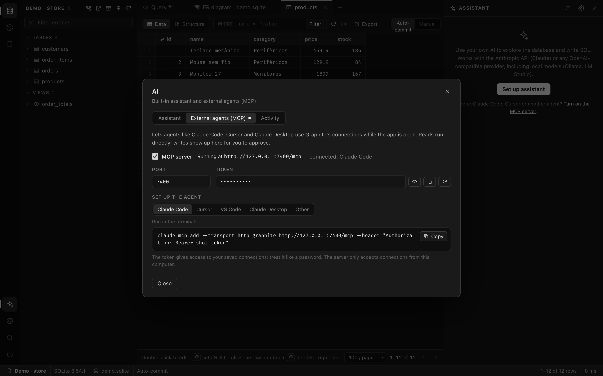

24 databases, one app
Relational, analytics, cloud warehouses and NoSQL, with saved connections, passwords encrypted by your OS keychain, and a demo database to try things.
Free and open source · MIT
A fast desktop client for 24 databases — PostgreSQL, MySQL, SQL Server, Oracle, SQLite, MongoDB, Redis, ClickHouse and more. Bring your own AI: a built-in assistant and an MCP server for Claude Code, Cursor and friends — every write waits for your approval.
macOS (Apple Silicon & Intel) · Linux (.deb, AppImage) · English, Português, Español

Built to be quick with the keyboard and careful with your data.
Relational, analytics, cloud warehouses and NoSQL, with saved connections, passwords encrypted by your OS keychain, and a demo database to try things.
Autocomplete for tables and columns, run everything or just the statement under the cursor, several results per run, and snippets like sel, ij or ups.
Double-click to edit, set NULL, delete rows, then apply everything in one transaction. Works on query results too, when the primary key is there.
Right-click a table for SELECT with JOINs that follow the foreign keys, INSERT, UPDATE or DELETE — ready to fill in.
Automatic layout, inferred relations when the database has no foreign keys, search, keys-only view, SVG and PNG export.
.sql and .sql.gz backups without pg_dump or mysqldump, streamed restore, and exports to CSV, JSON or INSERTs with no row limit.
Auto-commit or manual mode per connection with commit and rollback. On PostgreSQL each statement gets a savepoint, so one error doesn't sink the transaction.
English, Português and Español. Follows your system and switches instantly, no restart.
TLS that verifies the server's certificate by default, your own CA, and client certificates for mutual TLS. Passwords and keys stay encrypted on your machine.
Each one with its own query language, catalog and quirks — tested against real servers, except the ones marked beta.
MongoDB and Redis are editable in the grid; queries use each database's own language.
AI, on your terms
Use the built-in assistant with the Anthropic API or any OpenAI-compatible provider — including local models with Ollama or LM Studio — or let Claude Code, Cursor, VS Code and Claude Desktop use your connections through MCP.

Turn on the MCP server in AI and agents → External agents and copy the command for your client. Graphite shows the exact config with your token.
$ claude mcp add --transport http graphite \
http://127.0.0.1:7329/mcp \
--header "Authorization: Bearer <token>"

Free, no account, no telemetry.
Apple Silicon (M1 and newer) or Intel.
The app isn't notarized by Apple yet. Open System Settings → Privacy & Security and click “Open Anyway”, or run:
xattr -dr com.apple.quarantine /Applications/Graphite.appx64. The .deb sets up the menu entry and the graphite command.
sudo apt install ./graphite_*_amd64.debNode.js 22+. Works on macOS and Linux.
git clone https://github.com/julioczn/graphite
cd graphite && npm install
npm start